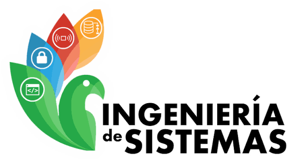

FACULTAD DE INGENIERÍA · PREGRADO PRESENCIAL
Ingeniería de Sistemas.
Tu futuro tecnológico empieza en el corazón de la Amazonia.
Formamos profesionales íntegros capaces de liderar la transformación digital, la inteligencia artificial, el modelado geoespacial y el desarrollo de software sustentable para la región amazónica y el mundo.

El programa
Propósito de formación
El Programa Ingeniería de Sistemas de la Universidad de la Amazonia tiene como principal propósito desarrollar procesos de formación integral de profesionales de la Ingeniería de Sistemas, mediante un currículo que aborda los conocimientos propios de las ciencias básicas, la ingeniería, el campo tecnológico, investigativo, socio-humanista y de formación complementaria.
Esto le permite al egresado interactuar con su entorno e incidir positivamente en él, mediante la creación, innovación y aplicación de soluciones computacionales soportadas en las Tecnologías de la Información y la Comunicación, que contribuyan al fortalecimiento y progreso económico, social, tecnológico y sustentable de la región Amazónica y el país.
DATOS OFICIALES DEL PROGRAMA
Ficha Técnica del Programa
Información regulatoria, académica y administrativa conforme a los registros formales ante el Ministerio de Educación Nacional de la República de Colombia.
Identidad
Misión y visión
Misión
El programa académico Ingeniería de Sistemas de la Universidad de la Amazonia asume como encargo social la formación de profesionales íntegros, con capacidad para crear, innovar, formular y solucionar problemáticas organizacionales y productivas, apoyados en el desarrollo de sistemas de información soportados en las diferentes tecnologías informáticas, con el propósito de contribuir al desarrollo social, económico y tecnológico de la región amazónica y del país.
Visión
Ingeniería de Sistemas será un programa académico en permanente acreditación académica y social, líder en la formación integral de profesionales, competentes en el campo académico, investigativo y humanístico; comprometidos con el desarrollo tecnológico de la región amazónica y del país apoyados en tecnologías de información.
Egresados
Perfil de egreso
El Ingeniero de Sistemas de la Universidad de la Amazonia es un profesional que comprende las dinámicas del entorno, reconociendo las implicaciones y las responsabilidades legales, profesionales, éticas, sociales, económicas y culturales del ejercicio de su profesión.
Así mismo, reconoce que la evolución constante de su disciplina y las condiciones cambiantes del entorno hacen necesario implementar estrategias autónomas de aprendizaje continuo, orientadas a su perfeccionamiento profesional.
- Responsabilidad legal, ética y social en el ejercicio profesional
- Comprensión de las dinámicas del entorno
- Aprendizaje autónomo y continuo
Currículo
Plan de estudios
El plan de estudios vigente fue aprobado mediante el Acuerdo 44 del 2 de diciembre de 2020 del Consejo Académico, que también define el plan de transición del programa.
Vida académica
Radio y semilleros de investigación
El programa cuenta con espacios que fortalecen la formación integral de los estudiantes, promoviendo la investigación y la comunicación.
Radio
Espacio radial gestionado por estudiantes y docentes del programa, dedicado a la divulgación de temas tecnológicos, académicos y culturales de la comunidad universitaria.
La radio fortalece las competencias comunicativas de los estudiantes y acerca la ingeniería a la región amazónica a través de contenidos informativos y educativos.
Semilleros de investigación
El programa impulsa la formación investigativa desde los primeros semestres mediante semilleros que abordan líneas como sistemas de información geográfica, desarrollo de software, inteligencia artificial y tecnologías aplicadas a la región.
Los semilleros permiten a los estudiantes participar en proyectos reales, publicar resultados y representar a la universidad en eventos académicos nacionales e internacionales.
Ingreso
Requisitos de Admisión
El proceso de selección y admisión está regulado por la Dirección de Admisión, Registro y Control Académico de la Universidad de la Amazonia.
Requisitos
Título de Bachiller, Pruebas de Estado ICFES / Saber 11 con ponderación reglamentaria para áreas de matemáticas y ciencias, y pago de derechos de inscripción.
Consultar portal de admisiones oficial →Inscripción
El valor de la inscripción es el 8,0 % del S.M.M.L.V. según el Acuerdo 02 del 26 de enero de 2012. Diligenciamiento del formulario digital en la plataforma Chairá.
Ir a inscripciones →Matrícula
El valor del derecho de matrícula para pregrado presencial está definido en el Acuerdo 01 del 26 de enero de 2012 del Consejo Superior.
Ver tabla de matrícula →Recursos
Documentos de interés
INSCRIPCIONES ABIERTAS
Comienza tu trayectoria en la Ingeniería de Sistemas
Únete a la comunidad de desarrolladores, investigadores y líderes que impulsan el desarrollo informático del sur colombiano.
Contacto
Coordinación y contacto directo
Resolvemos tus dudas sobre admisión, plan de estudios y opciones de grado.